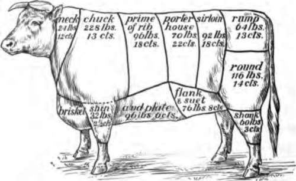

Chapter V. The Care And Cooking Of Food
Description
This section is from the book "The Human Body And Health", by Alvin Davison. Also available from Amazon: The Human Body and Health.
Chapter V. The Care And Cooking Of Food
Preventing Waste
In many households, a considerable amount of food is wasted because of poor cooking, or because it is allowed to spoil. Every house should be provided with a cool cellar or a refrigerator to prevent molds and bacteria from spoiling such food as meat, milk and cooked vegetables. Cold prevents largely the growth of such plants.
Much of the food remaining from a meal may, if kept cool, be fixed over into appetizing dishes for another day. Inquiries lately made among many families by the Government officers show that over one hundred million dollars worth of food is wasted annually in the United States.
Milk
This requires more care than any other food. One of the chief causes of sickness and death among young children is bad milk. More than twice as many people die from dirty milk as from old age. Milk is made bad or sour by bacteria getting into it.
Milk drawn by clean hands into scalded tin or agate pails from clean cows kept in clean stables will contain very few bacteria. These will grow but little during the next three days, if the milk is cooled at once and placed in tight jars in a cold cellar or spring house. Milk should not be left in an open vessel as it absorbs odors and receives many bacteria always floating in the air.
How Milk May Cause Sickness
Those who are sick or are just recovering from illness, should not handle milk, which is to be used by others. The bacteria which cause typhoid fever, scarlet fever, tonsilitis and diphtheria, grow very rapidly when they get into milk. Every year hundreds of people catch these diseases from using milk receiving bacteria from sick persons who have handled the milk. Any one who nurses the sick may carry disease germs from them to the milk vessels, or these may get the germs from being washed in impure water.
Cleaning Milk Vessels
Many babies are killed every year by their own sisters or mothers who are careless in neglecting to clean properly the nursing bottle or other vessels. Cholera infantum and other similar sickness in babies usually results from unclean milk. A rubber tube must never be used in a nursing bottle because it cannot be cleaned. The nursing bottle and the nipple which slips over its wide mouth should be brushed thoroughly in cold water immediately after use. The bottle may then be washed with hot water and soap, and the nipple left until needed in a cup of water containing a pinch of sal soda. It must be rinsed before use.
Milk should always be delivered in sealed glass bottles, to prevent the entrance of dirt and bacteria which are blown about in the dusty streets when the milk is being handled. A vessel after being used for milk should be cleaned immediately by rinsing well in cold water and then washing in hot water with soap or washing soda. If possible, it should then be placed for a few minutes in boiling water or steam.
Preventing Sickness From Unclean Milk
Sometimes it is necessary to use milk which is not known to come from healthy cows in a clean dairy. Children may get tuberculosis from the use of milk given by cows having this disease. It is therefore wise when there is a probability that the milk is impure to heat it very hot for twenty minutes without boiling it. This is called pasteurizing it. It is easily done by placing a jar or pan of milk into another larger pan of water which is kept steaming the required time. After heating, it should be quickly cooled and used within twenty-four hours. While being heated and cooled, the milk should be stirred to hasten the process.
Meats
One should never use chicken or other meats which have been in cold storage for several weeks. Canned meat or any other meat which has an unpleasant odor is likely to cause sickness because bacteria have grown in it and produced a poison. In warm weather, meat will remain good only one or two days in a cool cellar but if placed on ice it may be kept longer.
Roasted, broiled or stewed meats are more healthful than fried meats. Some cuts of meat are much more tender than others. Tender cuts such as round, sirloin and rump steaks and ribroast may be broiled or roasted. The tougher parts such as shoulder, chuck, brisket and belly, should be cooked in water in order to make them tender.
The water should be at the boiling point when the meat is placed in it so that the albumin of the outer part of the meat will be hardened and thus prevent the escape of the juices. After ten minutes' boiling, less heat should be used so that the water scarcely bubbles. This plan of cooking makes tough meat tender and nourishing.
Fig. 23. The names and prices of various cuts of beef.
Vegetables
Potatoes, carrots, turnips, beets, onions, and cabbage may be kept in good condition for several weeks or even months in a cool cellar. Celery, tomatoes, and peas and beans in the pod will remain fresh only a day or two unless put in the refrigerator.
Most vegetables may be cooked in boiling water in from thirty to sixty minutes, but string beans and some beets often require three or four hours. To make the food as pleasing as possible, it is well to cook the vegetables often used, in a variety of ways. Potatoes may be baked in the oven with the skins on; pared, sliced raw and fried; boiled and served whole; or boiled and mashed with cream.
Vegetables purchased from the grocer in tin cans should be removed from the cans as soon as they are opened to prevent the formation of poison from the tin.
Fruits
With the exception of winter pears and apples, which will keep well several months in a cold room, most of the fruits spoil soon after being picked. Ripe berries and cherries will not remain good longer than one or two days after being gathered. The spoiling is always caused by molds or bacteria.
The careful housekeeper may preserve many of the fruits such as cherries, peaches, plums and berries by drying them several days in the sun or a few hours in the oven. Bacteria and mold need moisture for growth. These germs may also be prevented from growing by adding to the fruit an equal quantity of sugar while it is being cooked. Such food is known as preserves. Only a spoonful or two of such rich food should be eaten at one meal.
The best plan for saving fruit after cleaning it, is to place it in scalded glass jars with rubber rings and with the covers on loose. The germs are then killed by placing the jars in a hot oven a half hour, or more, after which they are tightly closed.
Planning The Meals
One of the most important duties in the home is to provide the proper amount and kind of food for each meal. The list should always include foods that will form flesh and blood, and starch fats or sugars for fuel. A person fed only on fats, starches, and sugars, will starve because they do not make muscle and bone but give only heat and energy.
Bread, milk, lean meat, eggs, peas and beans are flesh-building foods. Potatoes, sugar, rice, corn and fat meat will help the muscles do hard work and keep the body warm. People in cold weather like to eat fat meat because it keeps them warm.
Practical Questions
1. How may molds and bacteria be prevented from spoiling food? 2. What makes milk sour? 3. What care should be taken with milk? 4. Why should those just recovering from illness not handle milk to be used by other persons? 5. Describe how the baby's bottle should be cleaned. 6. How should any milk vessel be cleaned? 7. How is milk pasteurized? 8. What kind of milk should be pasteurized? 9. Why do canned meats sometimes cause sickness? 10. What is the most healthful way of cooking meats? 11. How may fruits be preserved? 12. For what two uses in the body should every meal furnish food? 13. Name the foods which would make a satisfying dinner at small cost. 14. Name some foods for breakfast which supply proper nourishment. 15. Why do we need more potatoes and fat meat in winter than in summer? 16. Why do bread and milk form a good supper?
Suggestions For The Teacher
The facts in this chapter may be emphasized by a valuable lesson in English in which each pupil is asked to describe how three or four of the common foods are cared for and cooked in the home. The information given by the pupils in their written papers will show that while some food is spoiled by improper care, much more is practically spoiled or made impalatable by the wrong method of cooking. Suggestions made in the class will often be put into practical use in the home.
Continue to: